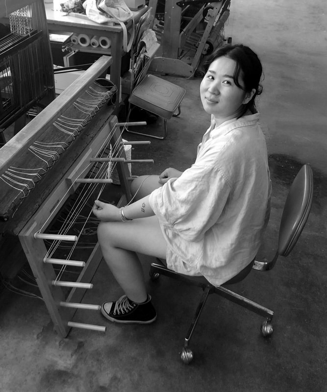

XINGYI ZHAU: Frameworks
Xingyi Zhao is a Chicago based textile artist whose practice examines line, time, and structure through the jacquard loom. Rooted in the history of textiles and material systems, her work draws from weaving drafts, grids, knitting diagrams, quilting patterns, and architectural blueprints to construct her compositions.
Zhao’s recent weavings explore the forms of domestic vessels including bowls, plates, teacups, vases, and baskets, imprinting their silhouettes into woven surfaces and inviting reflection on textiles as containers of both use and meaning.
Zhao has exhibited at Roots and Culture, Zolla Lieberman Gallery, and ARC Gallery in Chicago. She has participated in residencies at Haystack Mountain School of Craft, Penland School of Craft, and Praxis Fiber Workshop, and was a fellow at Spudnik Press Cooperative. Her work has been supported by a SPARKS Grant from the Chicago Artists Coalition.
Zhao earned her BFA and MFA from the School of the Art Institute of Chicago. She lives and works in Chicago, where her practice continues to develop through sustained engagement with material, structure, and process.